2 jours
GANVIÉ · OUIDAH
Découverte — Ganvié & Ouidah
La cité lacustre de Ganvié en pirogue, Ouidah et la Porte du Non-Retour, le temple des pythons, le marché Dantokpa.
Des circuits courts, des rencontres vraies et une initiation au vaudou. Pas de tourisme de masse — juste des expériences uniques avec ceux qui font vivre la culture béninoise.
Cinq promesses qui transforment un simple voyage en souvenir indélébile.
Vous repartez avec le film professionnel de votre séjour — un souvenir à vie.
Vivez à 100%, on filme pour vous. Soyez pleinement présent à chaque instant.
Immersion totale dans la vie locale — vous vous sentirez chez vous.
Vous payerez toujours les vrais tarifs du pays. Jamais de "prix touriste".
Donnez-nous votre prénom et votre feedback — une musique béninoise originale racontera votre aventure.
Oubliez les circuits standardisés. Ici, chaque rencontre est vraie, chaque pas est pensé pour vous connecter à l'âme béninoise.
Pêcheurs, artisans, prêtres vaudou — vos hôtes vivent et racontent leur Bénin, pas un script touristique.
2 ou 3 jours pour explorer l'essentiel sans précipitation. Nous adaptons l'itinéraire selon vos envies.
Initiation au vaudou avec des maîtres reconnus, dans un cadre respectueux, sécurisé et profondément humain.
Une découverte essentielle en 2 jours, ou une immersion avec initiation vaudou — à vous de choisir.
La cité lacustre de Ganvié en pirogue, Ouidah et la Porte du Non-Retour, le temple des pythons, le marché Dantokpa.
 ★ Initiation Vaudou
★ Initiation VaudouLe circuit Découverte + une initiation vaudou complète avec un prêtre reconnu : rituel de purification, danse des esprits, offrandes et le Fa.
« Le vaudou n'est pas de la magie noire. C'est une philosophie, une façon de vivre en harmonie avec la nature. »— Prêtre Vaudou
Tout ce qu'il faut savoir avant de partir — 8 rubriques essentielles.
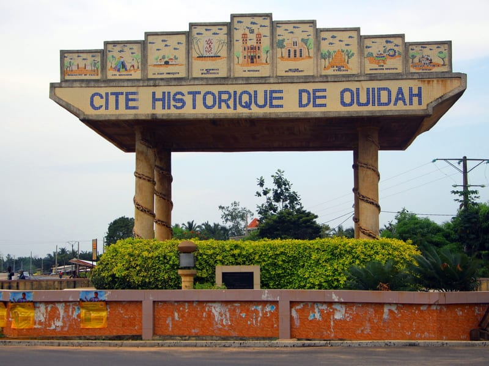
La Porte du Non-Retour, le temple des pythons, le musée d'histoire de l'esclavage.
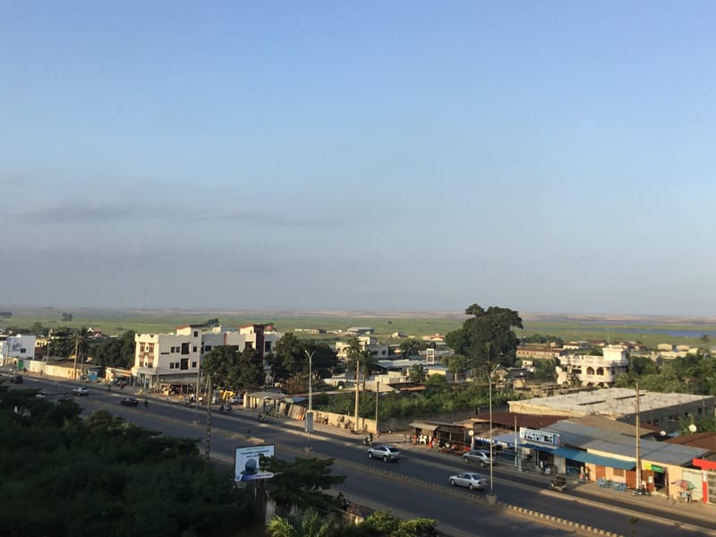
L'embarcadère pour Ganvié, marché animé, université et vie quotidienne.
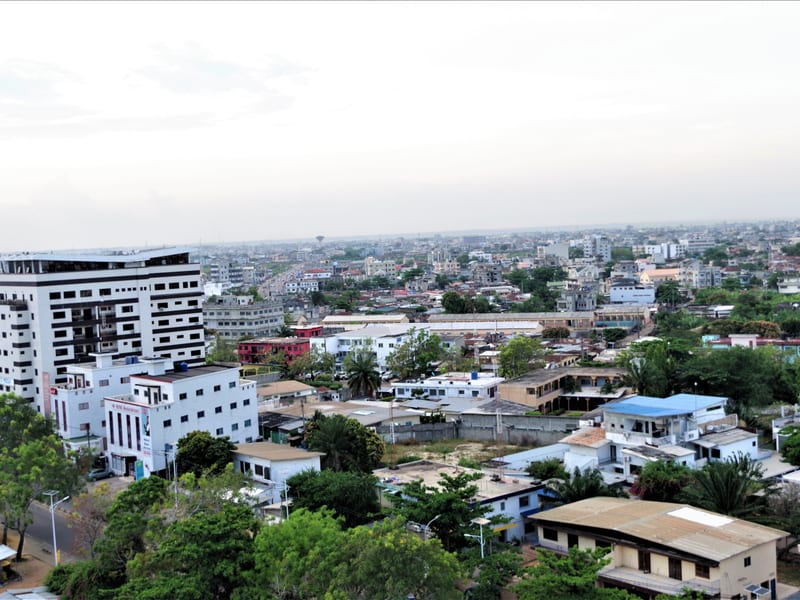
La capitale économique, marché Dantokpa, Monument de l'Amazone, vie trépidante.
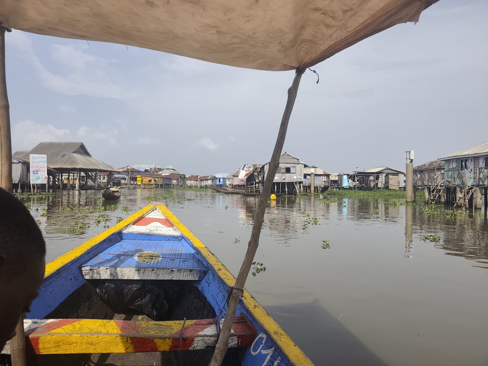
La Venise africaine, cité lacustre, maisons sur pilotis, pirogue et pêcheurs.
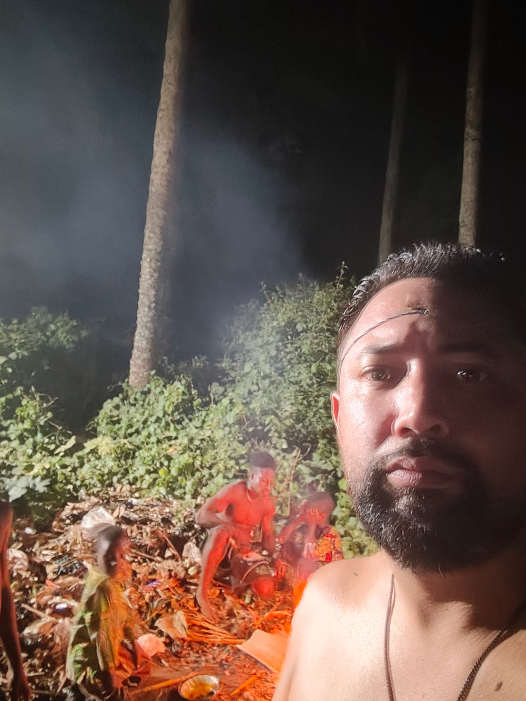
Rituel complet avec un prêtre reconnu, offrandes et révélation de votre Fa.
Religion à part entière reconnue par l'UNESCO, le vaudou est né ici, au Bénin. Avec nous, vous ne ferez pas que l'observer : vous serez initié par un prêtre vaudou dans un cadre respectueux et sécurisé.
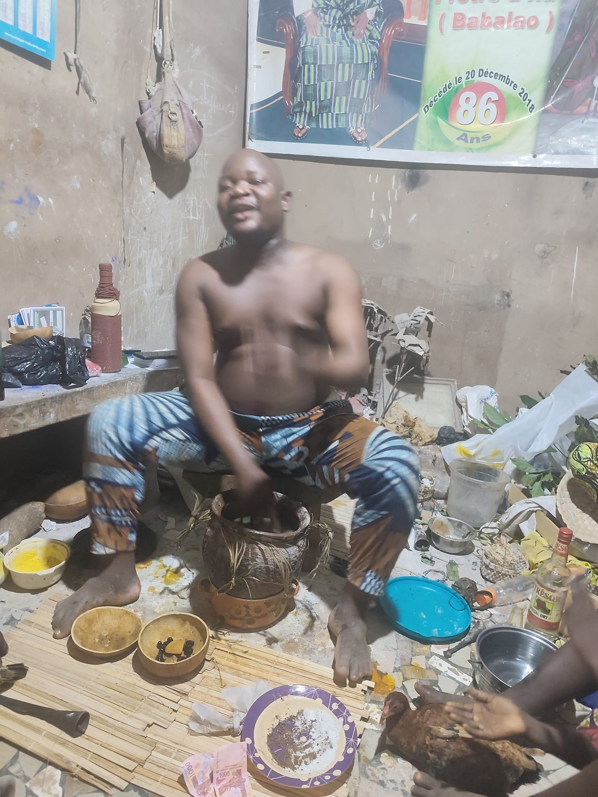
Ce ne sont pas des guides touristiques. Ce sont des Béninois qui vous ouvrent leur monde.
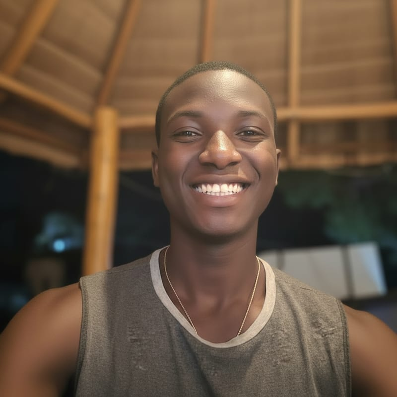
« J'organise la coordination pour votre bien-être avec les différents interlocuteurs sur place. »
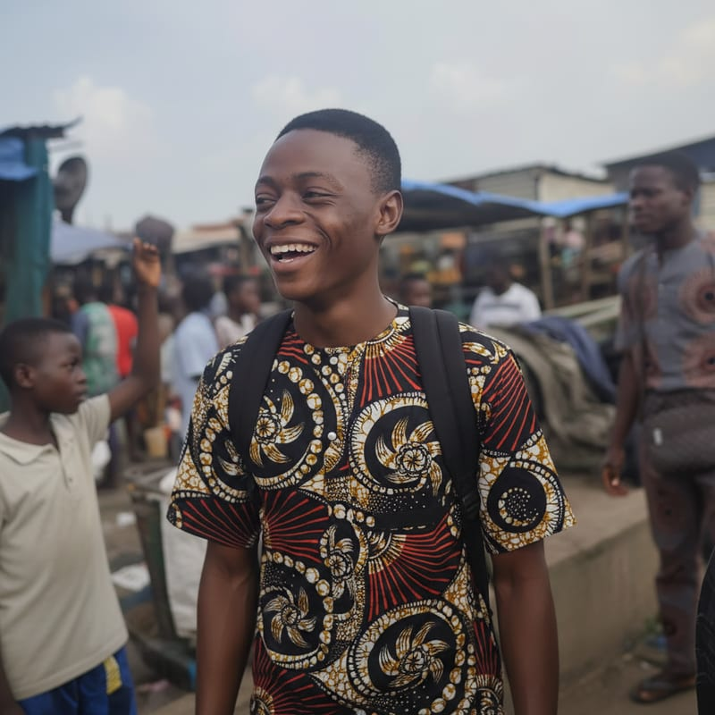
« Je vous ferai découvrir ma famille sur l'eau à Ganvié. »
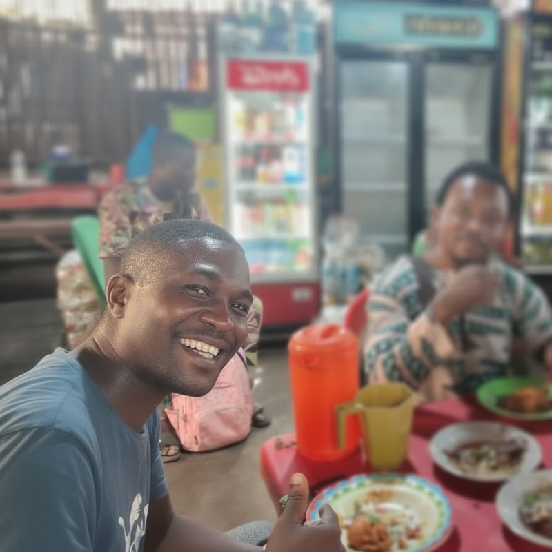
« Vous pourrez vivre vos moments à 100%. Vous partirez avec le film de votre séjour, un souvenir fantastique. »
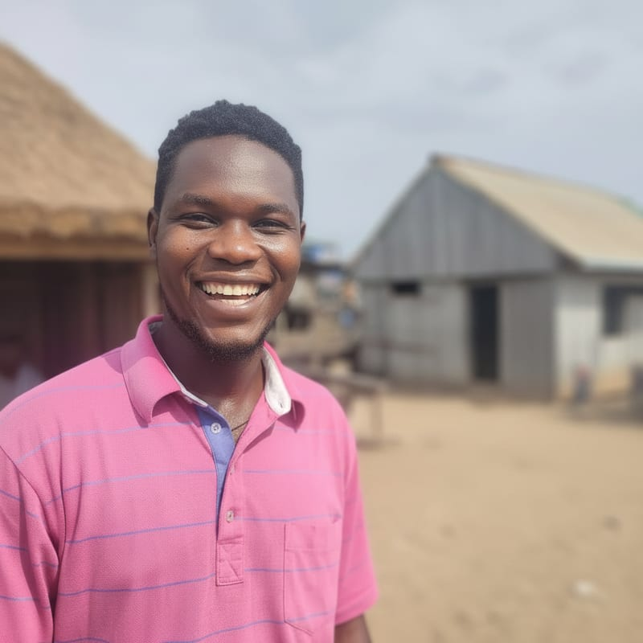
« Je connais chaque lieu et son histoire. »
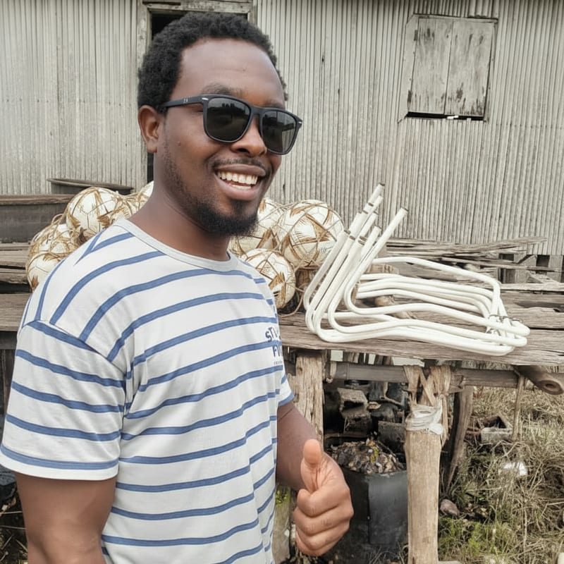
« Guide toujours là pour faire le lien avec la population, vous vous sentirez comme un vrai Béninois. C'est mon objectif. »
J'ai vécu une expérience inoubliable avec mon guide Charles, un pêcheur qui m'a fait découvrir les secrets de la lagune. Et l'initiation au vaudou… waouh !
Le Colorado du Bénin est un secret bien gardé. Des paysages de canyons rouges incroyables et un accueil villageois d'une générosité rare.
Je suis partie sceptique, je suis revenue transformée. Le vaudou, c'est une connexion profonde avec la nature et les ancêtres.
Un message, un appel WhatsApp — et nous vous répondons sous 24h.